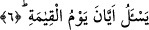

aynı anlam ruhunu barındıran “el-fücûr” ise dindarlık perdesini yarmak, yırtmak
demektir. Bâzı âlimlere göre “el-fücûr” kökü yarmak anlamına değil, meyletmek
anlamınadır. el-Kâzib/yalan söyleyen, el-mükezzib/yalanlayan, el-fâsık/fasık olan
kişilerden her biri fâcirdir; yâni haktan yüz çevirendir. Nitekim bir bedevi Hz. Ömer
hakkında: “Allah’ım o fücur işlemişse onu bağışla” demiştir ki “yalan söylemişse onu
bağışla” demektir.
Sa’dî Müftî’nin yaptığı tahlillerin sonucuna göre âyetin anlamı; insan bütün irâdesini
haktan yana meyletmek için kullanır demektir. Ebû Hayyân’ın incelemesine göre âyette
yer alan “bel” kelimesi önceki hükme atıfta bulunup onu iptal etmek için değil, ondan
başka bir hükme intikal etmek için getirilmiştir. Buna göre mânâ: “Fâcir insan gelecek
kıyâmeti devamlı yalanlamak ister” şeklinde olur.
Bâzı âlimlere göre yukardaki âyet daha önce geçen “insan zan mı ediyor” fiiline
mâtuftur. Buna göre “bel” ya daha önce geçen azarlamayı bir yana bırakarak ikinci bir
azarlamaya geçişi ifâde etmektedir. Ya da bu sorudan sonra intikal edilen olumlu bir
cevabı ifâde etmektedir. Bu ihtimal daha beliğ ve daha uygundur. Bütün bu
açıklamaların ışığı altında âyet-i kerîmeye mânâ vermek gerekirse; tam tersine
insanoğlu gelecek zamanda günahlarına devam etmeyi istiyor, bunlardan vazgeçmek
istemiyor, denmiş olmaktadır.
Âyette yer alan “emâm/ön” kelimesi gelecek zamanı ifâde etmektedir.
Râğıb İsfahânî’nin ifâdesine göre; âyetin mânâsı insanoğlu günahına devam ve onu
işlemek için hayat istiyor, yaşamayı arzu ediyor şeklindedir.
Bâzılarına göre bu âyetin anlamı: İnsan günah işlemek istiyor ve yarın tevbe ederim
diyor, sonra da bunu yapmıyor. Böylece yapmış olduğu bu hareket, -söz verip yerine
getirmediği için- fücûr oluyor.
Kâşifî demiştir ki; yeniden yaratılma ve hesap verme konusunda önünde duran şey
hakkında insan yalan söylemek ister.
Bu âyet-i kerîmede mahcub/mahrum olan insanın fiil yapmadan önce inanç ve niyeti
ile önündeki zamanlarda günah işlemek istediğine ve yerinde belirtildiği üzere bunu
sorumluluk getiren azmi ile yaptığına işâret edilmektedir.
6. «Kıyâmet günü ne zamanmış?» diye sorar.
Burada ki soru, kıyâmetin ne zaman kopacağını öğrenmek için değil, inanmadığını,
uzak gördüğünü ifâde eden bir husustur. Sanki bu âyet önceki âyetin açıklanması için
sorulan bir sorunun cevabı mâhiyetindedir. “İnsanoğlu haktan uzaklaşıp günah işlemek
istediğinde ne yapıyor?” şeklindeki soruya: “Kıyâmet ne zamanmış diye alay eder”
şeklinde cevap verilmiş olunuyor.